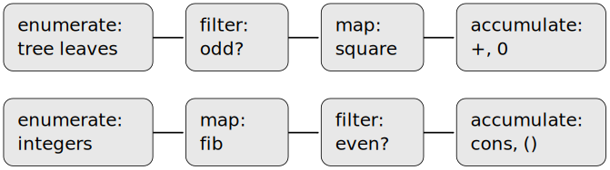
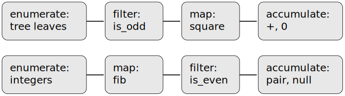

In working with compound data, we've stressed how data abstraction
permits us to design programs without becoming enmeshed in the details
of data representations, and how abstraction preserves for us the
flexibility to experiment with alternative representations. In this
section, we introduce another powerful design principle for working
with data structures—the use of conventional interfaces.
In section 1.3 we saw how
program abstractions, implemented as higher-order
procedures,functions,
can capture common patterns in programs that deal with numerical data. Our
ability to formulate analogous operations for working with compound data
depends crucially on the style in which we manipulate our data structures.
Consider, for example, the following
procedure,function,
analogous to the
count-leavescount_leavesprocedurefunction
of section 2.2.2, which takes a tree as argument
and computes the sum of the squares of the leaves that are odd:
On the surface, this
procedurefunction
is very different from the following one, which constructs a list of all
the even Fibonacci numbers
${\textrm{Fib}}(k)$, where
$k$ is less than or equal to a given integer
$n$:
Original
JavaScript
(define (even-fibs n)
(define (next k)
(if (> k n)
nil
(let ((f (fib k)))
(if (even? f)
(cons f (next (+ k 1)))
(next (+ k 1))))))
(next 0))
function even_fibs(n) {
function next(k) {
if (k > n) {
return null;
} else {
const f = fib(k);
return is_even(f)
? pair(f, next(k + 1))
: next(k + 1);
}
}
return next(0);
}
Despite the fact that these two
proceduresfunctions
are structurally very different, a more abstract description of the two
computations reveals a great deal of similarity. The first program
enumerates the leaves of a tree;
filters them, selecting the odd ones;
squares each of the selected ones; and
accumulates the results using
+,+,
starting with 0.
The second program
enumerates the integers from 0 to $n$;
computes the Fibonacci number for each integer;
filters them, selecting the even ones; and
accumulates the results using
cons,pair,
starting with the empty list.
A signal-processing engineer would find it natural to conceptualize these
processes in terms of
signals flowing through a cascade of stages, each of
which implements part of the program plan, as shown in
figure 2.13.figure 2.14.
In
sum-odd-squares,sum_odd_squares,
we begin with an
enumerator, which generates a signal consisting of
the leaves of a given tree. This signal is passed through a
filter, which eliminates all but the odd elements. The resulting
signal is in turn passed through a
map, which is a transducer that applies the
squareprocedurefunction
to each element. The output of the map is then fed to an
accumulator, which combines the elements using
+,+,
starting from an initial 0. The plan for
even-fibseven_fibs
is analogous.
Original
JavaScript

Figure 2.13 The signal-flow plans for the procedures
sum-odd-squares (top) and
even-fibs
(bottom) reveal the commonality between the two programs.

Figure 2.14 The signal-flow plans for the
functions
sum_odd_squares (top) and
even_fibs (bottom) reveal the
commonality between the two programs.
Unfortunately, the two
procedure definitionsfunction declarations
above fail to exhibit this signal-flow structure. For instance, if we
examine the
sum-odd-squaressum_odd_squaresprocedure,function,
we find that the enumeration is implemented partly by the
null?is_null
and
pair?is_pair
tests and partly by the tree-recursive structure of the
procedure.function.
Similarly, the accumulation is found partly in the tests and partly in the
addition used in the recursion. In general, there are no distinct parts of
either
procedurefunction
that correspond to the elements in the signal-flow description. Our two
proceduresfunctions
decompose the computations in a different way, spreading the enumeration
over the program and mingling it with the map, the filter, and the
accumulation. If we could organize our programs to make the signal-flow
structure manifest in the
proceduresfunctions
we write, this would increase the conceptual clarity of the resulting
code.program.
Sequence Operations
The key to organizing programs so as to more clearly reflect the
signal-flow structure is to concentrate on the signals that
flow from one stage in the process to the next. If we represent these
signals as lists, then we can use list operations to implement the
processing at each of the stages. For instance, we can implement the
mapping stages of the signal-flow diagrams using the
mapprocedurefunction
from section 2.2.1:
All that remains to implement signal-flow diagrams is to enumerate the
sequence of elements to be processed. For
even-fibs,even_fibs,
we need to generate the sequence of integers in a given range, which we
can do as follows:
Now we can reformulate
sum-odd-squaressum_odd_squares
and
even-fibseven_fibs
as in the signal-flow diagrams. For
sum-odd-squares,sum_odd_squares,
we enumerate the sequence of leaves of the tree, filter this to keep only
the odd numbers in the sequence, square each element, and sum the results:
function sum_odd_squares(tree) {
return accumulate(plus,
0,
map(square,
filter(is_odd,
enumerate_tree(tree))));
}
For
even-fibs,even_fibs,
we enumerate the integers from 0 to $n$, generate
the Fibonacci number for each of these integers, filter the resulting
sequence to keep only the even elements, and accumulate the results
into a list:
The value of expressing programs as sequence operations is that this
helps us make program designs that are modular, that is, designs that
are constructed by combining relatively independent pieces. We can
encourage modular design by providing a library of standard components
together with a conventional interface for connecting the components
in flexible ways.
Modular construction
is a powerful strategy for controlling complexity in
engineering design. In real signal-processing applications, for example,
designers regularly build systems by cascading elements selected from
standardized families of filters and transducers. Similarly, sequence
operations provide a library of standard program elements that we can mix
and match. For instance, we can reuse pieces from the
sum-odd-squaressum_odd_squares
and
even-fibseven_fibsproceduresfunctions
in a program that constructs a list of the squares of the first
$n+1$ Fibonacci numbers:
We can also formulate conventional data-processing applications in terms of
sequence operations. Suppose we have a sequence of personnel records and
we want to find the salary of the highest-paid programmer. Assume that we
have a selector salary that returns the salary
of a record, and a predicate
programmer?is_programmer
that tests if a record is for a programmer. Then we can write
function salary_of_highest_paid_programmer(records) {
return accumulate(math_max,
0,
map(salary,
filter(is_programmer, records)));
}
These examples give just a hint of the vast range of operations that
can be expressed as sequence operations.[2]
Sequences, implemented here as lists, serve as a conventional interface
that permits us to combine processing modules. Additionally, when we
uniformly represent structures as sequences, we have localized the
data-structure dependencies in our programs to a small number of sequence
operations. By changing these, we can experiment with alternative
representations of sequences, while leaving the overall design of our
programs intact. We will exploit this capability in
section 3.5, when we generalize the
sequence-processing paradigm to admit infinite sequences.
Exercise 2.34
Fill in the missing expressions to complete the following definitions of
some basic list-manipulation operations as accumulations:
function map(f, sequence) {
return accumulate((x, y) => $\langle{}$??$\rangle$,
null, sequence);
}
function append(seq1, seq2) {
return accumulate(pair, $\langle{}$??$\rangle$, $\langle{}$??$\rangle$);
}
function length(sequence) {
return accumulate($\langle{}$??$\rangle$, 0, sequence);
}
Original
JavaScript
function map(f, sequence) {
return accumulate((x, y) => pair(f(x), y),
null,
sequence);
}
function append(seq1, seq2) {
return accumulate(pair, seq2, seq1);
}
function length(sequence) {
return accumulate((x, y) => y + 1,
0,
sequence);
}
Exercise 2.35
Evaluating a
polynomial in $x$ at a given value
of $x$ can be formulated as an accumulation.
We evaluate the polynomial
\[ a_{n} x^n +a_{n-1}x^{n-1}+\cdots + a_{1} x+a_{0} \]
using a well-known algorithm called
Horner's rule, which structures the computation as
\[ \left(\cdots (a_{n} x+a_{n-1})x+\cdots +a_{1}\right) x+a_{0} \]
In other words, we start with $a_{n}$, multiply
by $x$, add $a_{n-1}$,
multiply by $x$, and so on, until we reach
$a_{0}$.[3]
Fill in the following template to produce a
procedurefunction
that evaluates a polynomial using Horner's rule. Assume that the
coefficients of the polynomial are arranged in a sequence, from
$a_{0}$ through
$a_{n}$.
Exercise 2.37
The
procedurefunctionaccumulate-naccumulate_n
is similar to
accumulateaccumulate
except that it takes as its third argument a sequence of sequences, which
are all assumed to have the same number of elements. It applies the
designated accumulation
procedurefunction
to combine all the first elements of the sequences, all the second elements
of the sequences, and so on, and returns a sequence of the results. For
instance, if s is a sequence containing four
sequences
then the value of
(accumulate-n + 0 s)accumulate_n(plus, 0, s)
should be the sequence
(22 26 30).list(22, 26, 30).
Fill in the missing expressions in the following definition of
accumulate-n:accumulate_n:
Original
JavaScript
(define (accumulate-n op init seqs)
(if (null? (car seqs))
nil
(cons (accumulate op init ??)
(accumulate-n op init ??))))
Exercise 2.38
Suppose we represent vectors $v=(v_{i})$ as
sequences of numbers, and matrices $m=(m_{ij})$
as sequences of vectors (the rows of the matrix). For example, the matrix
\[ \left[
\begin{array}{llll}
1 & 2 & 3 & 4\\
4 & 5 & 6 & 6\\
6 & 7 & 8 & 9\\
\end{array}
\right] \]
Original
JavaScript
is represented as the sequence
((1 2 3 4) (4 5 6 6) (6 7 8 9)).
is represented as the following sequence:
list(list(1, 2, 3, 4),
list(4, 5, 6, 6),
list(6, 7, 8, 9))
With this representation, we can use sequence operations to concisely
express the basic matrix and vector operations. These operations
(which are described in any book on matrix algebra) are the following:
Fill in the missing expressions in the following
proceduresfunctions
for computing the other matrix operations. (The
procedurefunctionaccumulate-n
is defined in
accumulate_n
is declared in
exercise 2.37.)
function matrix_times_vector(m, v) {
return map($\langle{}$??$\rangle$, m);
}
function transpose(mat) {
return accumulate_n($\langle{}$??$\rangle$, $\langle{}$??$\rangle$, mat);
}
function matrix_times_matrix(m, n) {
const cols = transpose(n);
return map($\langle{}$??$\rangle$, m);
}
Original
JavaScript
function matrix_times_vector(m, v) {
return map(row => dot_product(row, v), m);
}
function transpose(mat) {
return accumulate_n(pair, null, mat);
}
function matrix_times_matrix(n, m) {
const cols = transpose(m);
return map(x => map(y => dot_product(x, y), cols), n);
}
Exercise 2.39
The
accumulateaccumulateprocedurefunction
is also known as
fold-right,fold_right,
because it combines the first element of the sequence with the result
of combining all the elements to the right. There is also a
fold-left,fold_left,
which is similar to
fold-right,fold_right,
except that it combines elements working in the opposite direction:
Original
JavaScript
(define (fold-left op initial sequence)
(define (iter result rest)
(if (null? rest)
result
(iter (op result (car rest))
(cdr rest))))
(iter initial sequence))
function fold_left(op, initial, sequence) {
function iter(result, rest) {
return is_null(rest)
? result
: iter(op(result, head(rest)),
tail(rest));
}
return iter(initial, sequence);
}
What are the values of
Original
JavaScript
(fold-right / 1 (list 1 2 3))
fold_right(divide, 1, list(1, 2, 3));
Original
JavaScript
(fold-left / 1 (list 1 2 3))
fold_left(divide, 1, list(1, 2, 3));
Original
JavaScript
(fold-right list nil (list 1 2 3))
fold_right(list, null, list(1, 2, 3));
Original
JavaScript
(fold-left list nil (list 1 2 3))
fold_left(list, null, list(1, 2, 3));
Give a property that
opop
should satisfy to guarantee that
fold-rightfold_right
and
fold-leftfold_left
will produce the same values for any sequence.
Original
JavaScript
1.5
Original
JavaScript
0.16666666666666666
Original
JavaScript
[1, [[2, [[3, [null, null]], null]], null]]
Original
JavaScript
[[[null, [1, null]], [2, null]], [3, null]]
We can guarantee that fold_right
and fold_left produce
the same values for any sequence, if we require that
op is commutative and associative.
They also produce the same values, if
op is just associative and the
argument initial is a left and right
neutral element with respect to op.
fold_right(plus, 0, list(1, 2, 3));
fold_left(plus, 0, list(1, 2, 3));
Exercise 2.40
Complete the following definitions of reverse
(exercise 2.18) in terms of
fold-rightfold_right
and
fold-leftfold_left
from exercise 2.39:
We can extend the sequence paradigm to include many computations that are
commonly expressed using nested loops.[5]
Consider this problem: Given a positive integer
$n$, find all ordered pairs of distinct positive
integers $i$ and $j$,
where $1\leq j < i\leq n$, such that
$i +j$ is prime. For example, if
$n$ is 6, then the pairs are the following:
\[
\begin{array}{c|ccccccc}
i & 2 & 3 & 4 & 4 & 5 & 6 & 6 \\
j & 1 & 2 & 1 & 3 & 2 & 1 & 5 \\
\hline
i+j & 3 & 5 & 5 & 7 & 7 & 7 & 11
\end{array}
\]
A natural way to organize this computation is to generate the sequence
of all ordered pairs of positive integers less than or equal to
$n$, filter to select those pairs whose sum is
prime, and then, for each pair $(i, j)$ that
passes through the filter, produce the triple
$(i, j, i+j)$.
Here is a way to generate the sequence of pairs: For each integer
$i\leq n$, enumerate the integers
$j < i$, and for each such
$i$ and $j$
generate the pair $(i, j)$. In terms of
sequence operations, we map along the sequence
(enumerate-interval 1 n).enumerate_interval(1, n).
For each $i$ in this sequence, we map along the
sequence
(enumerate-interval 1 (- i 1)).
enumerate_interval(1, i - 1).
For each $j$ in this latter sequence, we
generate the pair
(list i j).list(i, j).
This gives us a sequence of pairs for each $i$.
Combining all the sequences for all the $i$ (by
accumulating with append) produces the
required sequence of pairs:[6]
Original
JavaScript
;; replace n below by the desired number
(accumulate append
nil
(map (lambda (i)
(map (lambda (j) (list i j))
(enumerate-interval 1 (- i 1))))
(enumerate-interval 1 n)))
function flatmap(f, seq) {
return accumulate(append, null, map(f, seq));
}
Now filter this sequence of pairs to find those whose sum is prime. The
filter predicate is called for each element of the sequence; its argument
is a pair and it must extract the integers from the pair. Thus, the
predicate to apply to each element in the sequence is
function is_prime_sum(pair) {
return is_prime(head(pair) + head(tail(pair)));
}
Finally, generate the sequence of results by mapping over the filtered
pairs using the following
procedure,function,
which constructs a triple consisting of the two elements of the pair along
with their sum:
function prime_sum_pairs(n) {
return map(make_pair_sum,
filter(is_prime_sum,
flatmap(i => map(j => list(i, j),
enumerate_interval(1, i - 1)),
enumerate_interval(1, n))));
}
Nested mappings are also useful for sequences other than those that
enumerate intervals. Suppose we wish to generate all the
permutations
of a set $S$; that is, all the ways of ordering
the items in the set. For instance, the permutations of
$\{1, 2, 3\}$ are
$\{1, 2, 3\}$,
$\{ 1, 3, 2\}$,
$\{2, 1, 3\}$,
$\{ 2, 3, 1\}$,
$\{ 3, 1, 2\}$, and
$\{ 3, 2, 1\}$. Here is a plan for generating
the permutations of $S$: For each item
$x$ in $S$,
recursively generate the sequence of permutations of
$S-x$,[7] and adjoin
$x$ to the front of each one. This yields, for
each $x$ in $S$, the
sequence of permutations of $S$ that begin
with $x$. Combining these sequences for
all $x$ gives all the permutations
of $S$:[8]
Original
JavaScript
(define (permutations s)
(if (null? s) ; empty set?
(list nil) ; sequence containing empty set
(flatmap (lambda (x)
(map (lambda (p) (cons x p))
(permutations (remove x s))))
s)))
Notice how this strategy reduces the problem of generating permutations of
$S$ to the problem of generating the
permutations of sets with fewer elements than
$S$. In the terminal case, we work our way down
to the empty list, which represents a set of no elements. For this, we
generate
(list nil),list(null),
which is a sequence with one item, namely the set with no elements. The
removeremoveprocedurefunction
used in permutations returns all the items in
a given sequence except for a given item. This can be expressed as a
simple filter:
Exercise 2.41
Write a
procedurefunctionunique-pairsunique_pairs
that, given an integer $n$, generates the
sequence of pairs $(i, j)$ with
$1\leq j < i\leq n$. Use
unique-pairsunique_pairs
to simplify the definition of
prime-sum-pairsprime_sum_pairs
given above.
Original
JavaScript
function unique_pairs(n) {
return flatmap(i => map(j => list(i, j),
enumerate_interval(1, i - 1)),
enumerate_interval(1, n));
}
function prime_sum_pairs(n) {
return map(make_pair_sum,
filter(is_prime_sum,
unique_pairs(n)));
}
Exercise 2.42
Write a
procedurefunction
to find all ordered triples of distinct positive integers
$i$, $j$,
and $k$ less than or equal to a given
integer $n$ that sum to a given integer
$s$.
Original
JavaScript
function unique_triples(n) {
return flatmap(i => flatmap(j => map(k => list(i, j, k),
enumerate_interval(1, j - 1)),
enumerate_interval(1, i - 1)),
enumerate_interval(1, n));
}
function plus(x, y) {
return x + y;
}
function triples_that_sum_to(s, n) {
return filter(items => accumulate(plus, 0, items) === s,
unique_triples(n));
}
Figure 2.15 A solution to the eight-queens puzzle.
Exercise 2.43
The
eight-queens puzzle asks how to place eight queens on a
chessboard so that no queen is in check from any other (i.e., no two
queens are in the same row, column, or diagonal). One possible solution
is shown in figure 2.15. One way to solve the
puzzle is to work across the board, placing a queen in each column.
Once we have placed $k-1$ queens, we must place
the $k$th queen in a position where it does not
check any of the queens already on the board. We can formulate this
approach recursively: Assume that we have already generated the sequence
of all possible ways to place $k-1$ queens in
the first $k-1$ columns of the board. For
each of these ways, generate an extended set of positions by placing a
queen in each row of the $k$th column. Now
filter these, keeping only the positions for which the queen in the
$k$th column is safe with respect to the other
queens. This produces the sequence of all ways to place
$k$ queens in the first
$k$ columns. By continuing this process, we
will produce not only one solution, but all solutions to the puzzle.
We implement this solution as a
procedurefunctionqueens,queens,
which returns a sequence of all solutions to the problem of placing
$n$ queens on an
$n\times n$ chessboard.
QueensThe function queens
has an internal
procedurefunctionqueen-colsqueens_cols
that returns the sequence of all ways to place queens in the first
$k$ columns of the board.
Original
JavaScript
(define (queens board-size)
(define (queen-cols k)
(if (= k 0)
(list empty-board)
(filter
(lambda (positions) (safe? k positions))
(flatmap
(lambda (rest-of-queens)
(map (lambda (new-row)
(adjoin-position new-row k rest-of-queens))
(enumerate-interval 1 board-size)))
(queen-cols (- k 1))))))
(queen-cols board-size))
In this
procedurefunctionrest-of-queensrest_of_queens
is a way to place $k-1$ queens in the first
$k-1$ columns, and
new-rownew_row
is a proposed row in which to place the queen for the
$k$th column. Complete the program by
implementing the representation for sets of board positions, including the
procedurefunctionadjoin-position,adjoin_position,
which adjoins a new row-column position to a set of positions, and
empty-board,empty_board,
which represents an empty set of positions. You must also write the
procedurefunctionsafe?,is_safe,
which determines for a set of positions whether the queen in the
$k$th column is safe with respect to the others.
(Note that we need only check whether the new queen is safe—the
other queens are already guaranteed safe with respect to each other.)
Original
JavaScript
function adjoin_position(row, col, rest) {
return pair(pair(row, col), rest);
}
Exercise 2.44
Louis Reasoner is having a terrible time doing
exercise 2.43. His
queensqueensprocedurefunction
seems to work, but it runs extremely slowly. (Louis never does manage to
wait long enough for it to solve even the
$6\times 6$ case.) When Louis asks Eva Lu Ator
for help, she points out that he has interchanged the order of the nested
mappings in the
flatmap,flatmap,
writing it as
Original
JavaScript
(flatmap
(lambda (new-row)
(map (lambda (rest-of-queens)
(adjoin-position new-row k rest-of-queens))
(queen-cols (- k 1))))
(enumerate-interval 1 board-size))
Explain why this interchange makes the program run slowly. Estimate
how long it will take Louis's program to solve the eight-queens
puzzle, assuming that the program in
exercise 2.43 solves the puzzle in time
$T$.
Louis's program re-evaluates the application
queen_cols(k - 1)) in each iteration
of flatmap, which happens
$n$ times for each
$k$. That means overall Louis's program will
solve the puzzle in a time of about $n^n T$
if the program in exercise 2.43 solves the
puzzle in time $T$.
[1]
This is, in fact,
precisely the
fringefringeprocedurefunction
from exercise 2.29. Here we've renamed it
to emphasize that it is part of a family of general sequence-manipulation
procedures.functions.
[2]
Richard Waters (1979) developed a program that automatically analyzes
traditional
Fortran programs, viewing them in terms of maps, filters, and accumulations.
He found that fully 90 percent of the code in the Fortran Scientific
Subroutine Package fits neatly into this paradigm. One of the reasons
for the success of Lisp as a programming language is that lists provide a
standard medium for expressing ordered collections so that they can be
manipulated using higher-order operations. Many modern languages, such as
Python, have learned this lesson.
[3]
According to
Knuth (1997b), this rule was formulated by
W. G. Horner early in the nineteenth century, but the method was actually
used by Newton over a hundred years earlier. Horner's rule evaluates
the polynomial using fewer additions and multiplications than does the
straightforward method of first computing
$a_{n} x^n$, then adding
$a_{n-1}x^{n-1}$, and so on. In fact, it is
possible to prove that any algorithm for evaluating arbitrary polynomials
must use at least as many additions and multiplications as does
Horner's rule, and thus Horner's rule is an
optimal algorithm for polynomial evaluation. This was proved (for the
number of additions) by
A. M. Ostrowski in a 1954 paper that essentially founded the modern study
of optimal algorithms. The analogous statement for multiplications was
proved by
V. Y. Pan in 1966. The book by
Borodin and Munro (1975)
provides an overview of these and other results about optimal
algorithms.
[4]
This definition uses
the extended version of map
described in footnote 7.
the function accumulate_n
from exercise 2.37.
[5]
This approach to nested
mappings was shown to us by
David Turner, whose languages
KRC and
Miranda provide elegant formalisms for dealing with these constructs. The
examples in this section (see also
exercise 2.43) are adapted from Turner 1981.
In section 3.5.3, we'll see
how this approach generalizes to infinite sequences.
[6]
We're representing a pair here
as a list of two elements rather than as
a Lisp pair.an ordinary pair.
Thus, the pair $(i, j)$ is
represented as
(list i j),list(i, j),
not
(cons i j).pair(i, j).
[7]
The set
$S-x$ is the set of all elements of
$S$, excluding
$x$.
[8] Semicolons in Scheme code areThe character sequence //
in JavaScript programs is
used to introduce comments. Everything from
the semicolon//
to the end of the line is ignored by the interpreter. In this book we
don't use many comments; we try to make our programs self-documenting
by using descriptive names.